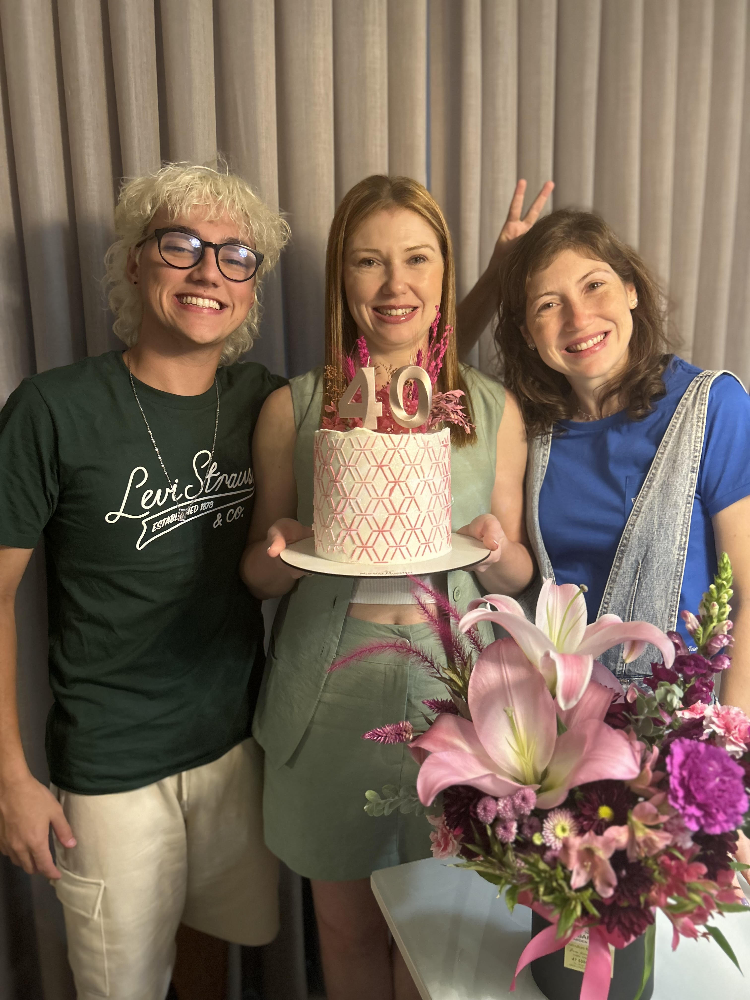
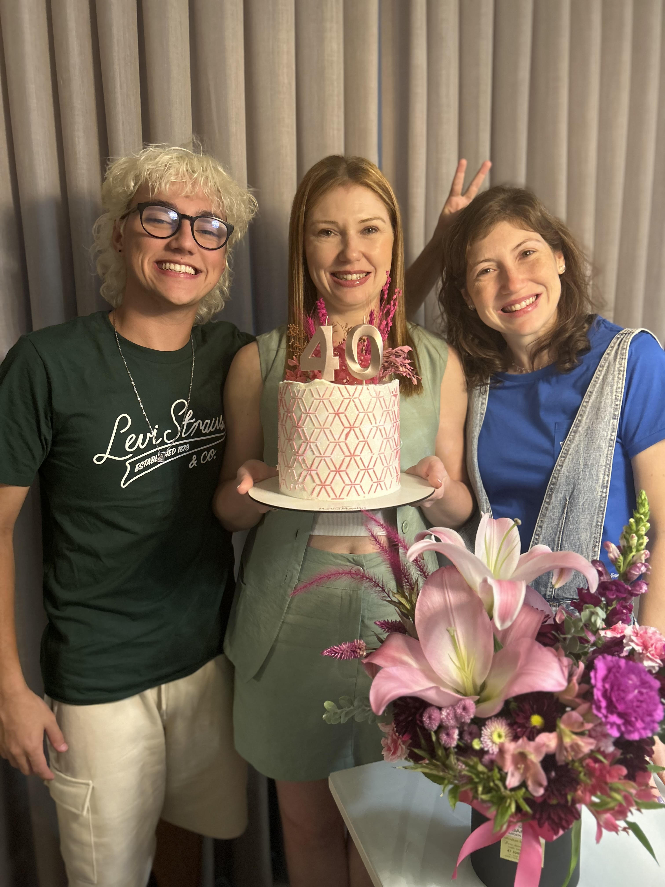

"O que você tem medo? O que te assusta? Não é o seu medo que te impede de brilhar, mas a sua luz." — Coach Carter (2005)
Desde pequeno, sempre fui interessado em escrever e criar histórias, o que me aproximou da literatura. Me expressar pelas palavras se tornou um talento natural para mim, mas também é algo que venho desenvolvendo e aprimorando ao longo do tempo. Meu maior sonho é dar vida aos meus escritos por meio da música, lançando álbuns e fazendo shows pelo Brasil inteiro. Sei que cada passo que dou me leva mais perto desse objetivo.
Além disso, sou um entusiasta dedicado a dar vida às minhas visões criativas e sentimentos. Estou constantemente explorando novas possibilidades e colaborações que possam ampliar meu horizonte.
Para alcançar essas metas, gosto de me dedicar a diferentes atividades sociais e culturais, me envolvendo com diferentes ideias e tipos de pessoas, pois considero isso um constante aprendizado. São com essas diferentes experiências, junto à minha paixão por utilizar da arte como meio de criação, que me inspiram e acredito que essa conexão com as pessoas enriquece minha visão de mundo e alimenta minha criatividade.
No meu dia a dia, busco equilibrar essas paixões com momentos de lazer e estudo. Quando não estou ouvindo música, curto me distrair jogando no Game Boy e DS. Estou finalmente estudando japonês, algo que sempre tive curiosidade, e atualmente estou relendo a série de livros do Harry Potter — só que desta vez em inglês. Sinto que brilho mais forte perto dos meus amigos e amo aproveitar um bom dia de sol. Se pudesse escolher, viveria à beira de alguma praia, aproveitando a brisa e a tranquilidade do mar.
Agora, estou entusiasmado com a possibilidade de me juntar à Apple Developer Academy, onde poderei aprimorar minhas habilidades, colaborar com mentes brilhantes e contribuir para a criação de apps inovadores que impactem a vida das pessoas. Estou pronto para dar o próximo passo nessa jornada e mal posso esperar para trazer minha visão e entusiasmo para o projeto.
 
